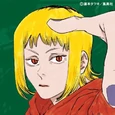
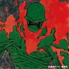

(Personajes) Denji Pochita Power Aki Hayakawa Makima Himeno Kobeni Higashiyama Demonio Ángel Beam Hombre Demonio Violencia  Prinz Kishibe Hirofumi Yoshida Reze Akane Sawatari Quanxi Cosmo Long Pingtsi Tsugihagi  Santa Claus Tolka Demonio del Futuro Katana Man Demonio del Infierno